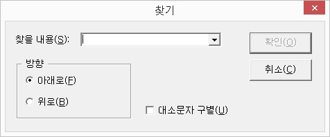

사용자가 입력한 검색어를 포함한 레코드를 찾습니다.

다음의 과정에 따라 찾기 기능을 사용합니다.
① '찾을 내용' 콤보박스에서 찾기를 원하는 문자열을 입력하거나, 이전에 찾았던 내용을 화살표를 사용하여 선택합니다.
센스 주소록은 최근 20개까지의 이전 검색 문자열을 기억하고 있습니다.
② '방향 선택' 라디오 버튼에서 원하는 방향을 선택합니다. 기본은 '아래로'입니다.
③ '대소문자 구별' 체크박스에서 원하는 옵션을 선택합니다. 기본은 해제되어 있어 대소문자 구별을 하지 않습니다.
④ '확인' 버튼을 눌러 찾기를 시작합니다.
찾을 문자열을 입력받지 않고 이전에 찾았던 내용으로 아래 방향 찾기를 합니다.
만약, 이전에 찾았던 내용이 없을 경우 찾기 기능과 동일하게 동작합니다.
찾기 기능에서 입력했던 문자열로 위 방향 찾기를 실행합니다.
만약, 이전에 찾았던 내용이 없을 경우 찾기 기능과 동일하게 동작합니다.